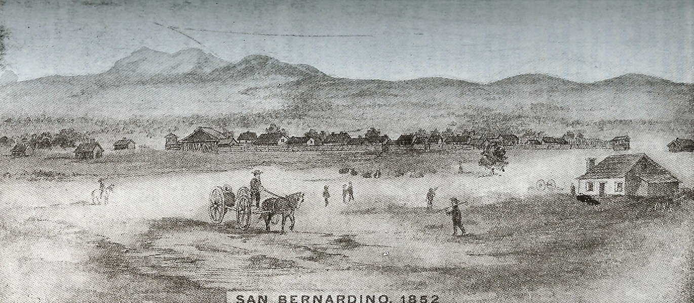
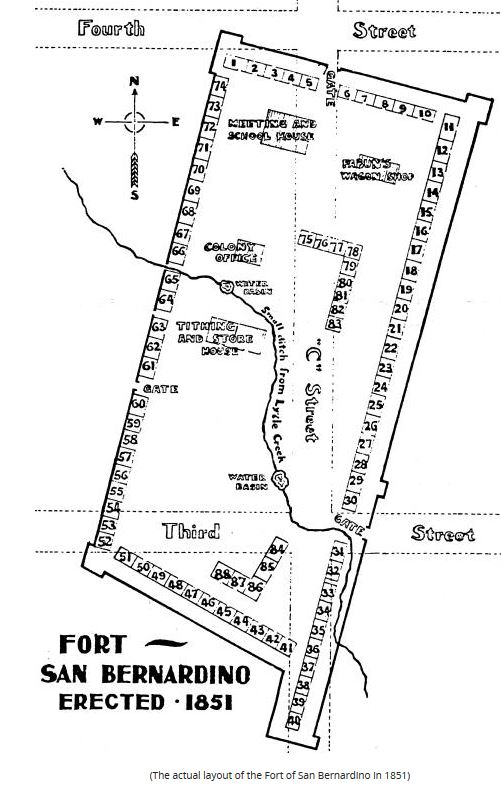

Links
California State Census, 1852 – California’s 1852 State Census, taken when many San Bernardino residents still lived in the fort, is available at Anestry.com. The city of San Bernardino was part of Los Angeles County in 1852. San Bernardino County was created in 1853.

Plan of the City of San Bernardino, 1853 – This city website shows the original one-mile-square lay out of the city, complete with the streets’ original Mormon names.
Map – Fort San Bernardino – 1851

Residents – Fort San Bernardino Residents – 18511
| Plat # | Name |
|---|---|
| 28 | Aldridge |
| 24 | Andrews, Simeon |
| 27 | Blackburn, Abner |
| 27 | Blackburn, Thomas |
| 63 | Brown, Joh. Sr. |
| 63 | Bybee, Alfred |
| 63 | Burk, Charles |
| 59 | Button, Montgomery E. |
| 70 | Casteel, Jacob |
| 70 | Crimson, Charles |
| 37-40 | Crosby, William (Bishop) |
| 37-40 | Crandel, Charles |
| 40 | Cox, A. J. (kept restaurant) |
| 40 | Cox, William J. |
| 40 | Collins, Albert W. (Peter) |
| 40 | John Cook |
| 67 | Cummings, Albert |
| 67 | Carter, Orlando |
| 67 | Davidson, J.J. |
| 66 | Daley, Edward |
| 33 | de Lin, Andrew P. |
| 33 | Dixon, David |
| 33 | Egbert, Robert |
| "R" | Fabun, Clark S. (wagon shop) |
| "R" | Fabun, Clark S. (residence) |
| 36 | Flake, Mrs. William (widow) |
| 36 | Garner, George |
| 53 | Glazer, Louis (store) |
| 53 | Grundy, Isaac |
| 51 | Gruard, Benjamin F. |
| 2 | Hakes, W.V. |
| 30 | Harris, John, Sr. |
| 30 | Harris, Moses (with 2 sons: Silas and John, with families) |
| 58 | Hoagland, Lucas (later Addison Pratt) |
| 48 | Hofflin, Samuel |
| 36 | Hopkins, Richard R. (kept store) |
| 36 | Holladay, John |
| 61 | Hunt, Cap't Jefferson (2 sons: Gilbert and Marshall) |
| 62 | Hunter, Cap't Jess |
| 62 | Hyde, William |
| 62 | Hyde, Joseph |
| 62 | Jones, David |
| 62 | Kartchner, William D. |
| 25, 26 | Lee, Rupert J. |
| 25, 26 | Lytle, Cap't Andrew |
| 4 | Mathews, Joseph |
| 5 | Mathews, William |
| 5 | Mills, William |
| 5 | Miner (kept store) |
| 74 | Minter (store) |
| 74 | McIlvane, Jerry |
| 74 | McGee, Henry |
| 74 | Ray |
| D, E, F | Rich, Charles G. (Apostle) |
| 31 | Rolfe, Samuel |
| 35 | Rolfe, Gilbert E. |
| 68 | Rollins, Henry (residence) |
| 69 | Rollins, Henry (store) |
| 69 | Rowan, Mrs. (Lizzie Flake) (African-American) |
| 22 | Seely, David |
| 1 | Shepard, Lafayette |
| 1 | Shepard, Samuel (father of Lafayette) |
| 1 | Shepard, Carlos |
| 65 | Sherwood, Henry G. |
| 65 | Sparks, O.S. |
| 64 | Stoddard, Sheldon |
| 32 | Stuart, John |
| 32 | Sullivan, Archie |
| 32 | Swarthout, Truman |
| 32 | Stout, William (1st schoolmaster) |
| 32 | Smith, "Bill" |
| 32 | Summee, Gilbert (blacksmith) |
| 32 | Stewart, James |
| 32 | Taft, Daniel M. |
| 72, 73 | Tanner, Albert |
| 72, 73 | Tanner, Joseph |
| 72, 73 | Tanner, Freeman (brother-in-law of Amasa Lyman) |
| 60 | Tanner, Sidney |
| 71 | Tanner, Mrs. ("Mother") |
| 71 | Taylor |
| 71 | Tenney, Nathan C. (Bishop) |
| 71 | Thomas, Daniel M. |
| 71 | Thorp, Theodore |
| 71 | Tyler, U. U. |
| 71 | Turley, Theodore |
| 42 | Whitney |
| 2 | Meeting House and School |
| P | Office of Lyman and Rich |
| 0 0 | Tithing House and Store |
| A, B, C | Lyman, Amasa |
| “The above are names of adults, most of them heads of families. The following persons did not see fit to live inside the ‘Old Fort.’ They made a camp on the spot now occupied by the old cemetery, about opposite the Moses Garner place:” | |
| Blackwell, Hiram | |
| Casteel, Joshua | |
| Clark, Francis | |
| Hanks, George | |
| Hughes, John | |
| Jones, Alonzo | |
| Phelps, John | |
| Smithson, Bartlett, and family | |
| Hollady, David | |
| Taylor, Norman | |
| Taylor, Elmer | |
| Taylor, “Old Man” | |
| Welsh, Matthew |
Luther Ingersoll, Ingersoll’s Century Annals of San Bernardino County, 1769 to 1904 (Los Angeles: L.A. Ingersoll, 1904), 640–41.↩